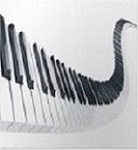

O "Nordzie" słów kilka
Są takie rzeczy których się nie da wytłumaczyć. Bo jak to się dzieje, że Roland nie posiada własnego workstation za 15 tysięcy. Konkurencja to Montage i Kronos, a zawsze Nord Stage jest porównywany i stawiany we wszelkich porównaniach z tymi potężnymi maszynami? Bohater dzisiejszego testu, czyli Nord Piano 3, to instrument dla tych, którym zależy na bardzo dobrym brzmieniu pianina oraz fortepianu. To dobrze skrojone piano. Nord Piano 4 - instrument dla sprecyzowanych!!